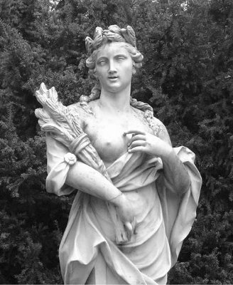

Buğdayın tanrıçası Demeter
Baştanrı Zeus'un köşe bucak sakladığı ateşi çalıp insanlara armağan eden gani gönüllü tanrı Prometeus gibi, Toprak Ana'nın ta kendisi olan tanrıça Demeter de buğdayı dünyamıza armağan etti. Böylece o artık hem insanoğlunu besliyor, hem de bir ana olarak son demde gene onu topraktan koynuna buyur ediyordu... Ve daha önce koynuna aldıklarıyla birlikte onu harmanlıyor, sonra da, kökleriyle beslenen başka bitki bedenlerine gönderip günışığında yeniden yaşama döndürüyordu onları... Böyle böyle bütün canlıları dönüştürerekten onları ölümsüzleştiriyordu...
Gene tanrıça Demeter'in topraktan koynunda üretip beslediği ağaçların damarlarında, özsu denen renksiz kan dolaşırdı ve bedenlerinde de Driyad'lar denen güzel mi güzel perikızları yaşardı. Bu güzel Driyadlar; geceleri ormanlarda el ele tutuşup yıldızlarla, gecenin renkleriyle oynaşırlar ve yeryüzünde varolup dolu dolu yaşamanın sevincini dillendirirlerdi ezgileriyle ve oyunlarıyla... Ne var ki yalnızca soylu ozanlar, sanatçılar duyabilirdi bu içten ezgileri... Onları duyabilen sanatçılar da bu güzel perikızlarından duyduklarını mermerlere, tuvallere işlerler; şiirlerinde dillendirip yanık ezgilere dönüştürürlerdi... O yüzden ağaçların dalları kesildiği ya da çiçekleri koparıldığı zaman, bu ağaçlarda yaşayan Driyadlar çığlık çığlığa ağlarlar, inlerlerdi...
Ve tanrıça Demeter de bir zarar gelmesin diye dünyamızdaki bütün ağaçların, bitkilerin üstüne titrerdi... Ağaçları o denli çok severdi ki Demeter; Teselya bölgesinde aşkla bağlı olup özenle kol kanat gerdiği bir ormanı bile vardı onun!.. Ölüler Ülkesi'nin acımasız tanrısı Hades'in kaçırdığı ve Yeraltı Dünyası'na kapattığı kızı Persefone'nin hasreti ağır bastığı günlerde tanrıça Demeter, Olimpos'tan inip bu ormana gelir; ağaçların bedenlerinde yaşayan perikızları Driyadlarla yarenlik eder; onların dillendirdiği ezgiler ve oyunlar eşliğinde efkâr dağıtırdı... Bu ormanın bazı yerlerinde şırıl şırıl sular akıtan dereler bile vardı. Hele bir ulu çınar ağacı vardı ki, tanrıça her gelişinde onunla biraz hoş beş etmeden ayrılamazdı dünyamızdan...
İşte bu ormanın övgüsünü duyan Teselya kralı Erisihton (Erysikhton), bir gün eli baltalı köleleriyle oraya çıkageldi. Ve tanrıça Demeter'in en sevdiği o ulu çınar ağacını kestirmekle işe başlamak istedi. Ulu çınarı elindeki baltasıyla kesmesini buyurduğu kölesi, yaşamında ilk kez krala isyan etti: "Baksanıza, çınar ağlıyor, 'beni kesmeyin' diye inliyor!" diye diklendi.
Bunun üzerine öfkelenip küplere binen kral Erisihton, kendine direnen kölesinin kafasını uçurttu hemen! Sonra da bu ulu çınarı devirme buyruğunu verdi diğer kölelerine. Bütün gönülsüzlüklerine karşın onlar da baltalarını ağacın beline beline vurmaya başladılar. Ne var ki daha ilk baltalar vurulduğunda, çınarın bedeninde yaşayan güzeller güzeli bir Driyad, tanrıçası Demeter'i yardımına çağırdı uzun bir çığlıkla. Tanrıça Demeter de, Olimpos'taki sarayında duyar duymaz hemen yaşlı bir kadın kılığına girdi ve gözü gibi sevdiği ormanına indi apar topar. Ve armağan olarak sunmak istediği bir demet haşhaş çiçeğiyle çıktı kralın karşısına: "Bak oğlum," dedi ona bütün sevecenliğiyle. "Tanrıça Demeter'in bu çok sevdiği ağaca sakın kıyma! Tanrıça çok üzülür, öfkelenir. Sonra öfkesi de çok yaman olur!"
Kral Erisihton, yaşlı kadını bütün hoyratlığıyla tersledi: "Bak kocakarı!" dedi. "Çekil karşımdan! Yoksa senin de kelleni uçurturum! Sonra ben kralım ve benim yanımda değil tanrıça Demeter, diğer tanrılar bile kim oluyor ki!.. Bütün bu ormanı kestireceğim! Kendim ve yandaşlarım için büyük bir yemek ve eğlence sarayı yaptıracağım. Orada bol bol yiyip içeceğim... Eğleneceğim! Anladın mı şimdi?"
Yaşlı kadın kılığındaki sevecen tanrıça Demeter de; "Demek yiyip içmek için bütün bu kesim, bu kırım, öyle mi? Peki, bundan sonra daha çok yiyip içeceksin!" dedi ve aniden uzaklaşıp gitti!..
Demeter hemen açlık tanrıçası Fames'e haber saldı. Kral Erisihton'un içine içtikçe şahlanan bir susuzluk ve yedikçe daha da acıktıran bir arzu yerleştirmesini rica etti ondan. Uzun saçlı, fırlak gözlü ve zayıflıktan kemikleri sayılan açlık tanrıçası Fames de hemen o gece gidip uyayan kralın içine, yedikçe acıktıran ve içtikçe susatan bir duygu üfleyip gitti... Ama öyle sıradan değil, karşı konulamaz bir açlık ve susuzluk duygusuydu bu! Zaten kral da hemen o gece fırladı yatağından; can havliyle yemek ve içecek istedi hizmetçilerinden... Ne var ki yedikçe açlığı, içtikçe susuzluğu habire şahlanıyordu...
Kralın bu durmadan yeme-içme doymazlığı kısa zamanda bütün sarayda duyuldu. Bu arada üzüm bağlarının ve şarabın tanrısı Diyonisos da, çok sevdiği buğdayın tanrıçası güzel Demeter'in o haklı öfkesine canı gönülden ortak oldu. Bu ağaç ve doğa düşmanı aç gözlü krala uygulayacakları cezayı birlikte yönlendirmeye başladılar... Ve ondan sonra da, onlarca hizmetçi ne yemek, ne de şarap yetiştirebiliyordu krala! Kral, sarayında ne var ne yoksa, kısa zamanda yedi içti... Artık halk da ürettiğinin neredeyse tümünü ona vermek zorunda kaldı...
Çevresinde ne var ne yoksa silip süpüren kral, yalnızca kendi halkının ürettiklerini değil, ülkenin bütün hayvan ve su kaynaklarını da tüketmeye başladı. Gene de ülkenin toprağı, havası, suyu ona yetmez oldu... Çünkü büyük büyük soluyor; havayı da arsızca kirletiyordu... Ülke kaynakları yetmeyince komşu ülkelere de çeşitli bahanelerle yağma amaçlı savaşlar açtı. Sonunda hiçbir şeyle doymaz olan bu aç kral, ülkenin en büyük meydanında bağıra bağıra halktan gene yiyecek içecek dilenirken, açlık duygusu öylesine ağır bastı ki artık dayanamadı; kendini parçalayıp yedi!..
Susuzluğunu gidermek için de kendi kanını içti...
Ne var ki kralın bu doymazlık illeti, bulaşıcı bir hastalık olarak kendinden sonraki krallara da bulaştı...